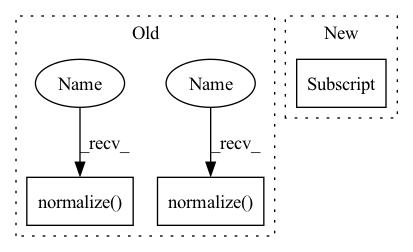

Pattern ID :3044
Before Change
with torch.no_grad():
t = teacher.unsqueeze(0) - teacher.unsqueeze(1)
if normalize:
t = F.normalize( t, p=2, dim=2)
t = torch.bmm(t, t.transpose(1, 2)).view(-1)
s = student.unsqueeze(0) - student.unsqueeze(1)
if normalize:
s = F.normalize( s, p=2, dim=2)
s = torch.bmm(s, s.transpose(1, 2)).view(-1)
return F.smooth_l1_loss(s, t, reduction="mean")
After Change
with torch.no_grad():
t = pairwaise_distance(teacher)
t_mean = t[t > 0] .mean()
t = t / (t_mean + 1e-7)
s = pairwaise_distance(student)In pattern: SUPERPATTERN
Frequency: 4
Non-data size: 3
Instances Fragment ID: 16446475
Project Name: sforaidl/kd_lib
Commit Name: 28d2e68c71f5d14e9784f85a4f5c6241b858089b
Time: 2020-08-28
Author: khizirsiddiqui@gmail.com
File Name: KD_Lib/KD/vision/RKD/loss_metric.py
M Class Name: RKDDistanceLoss
N Class Name: RKDDistanceLoss
M Method Name: forward(3)
N Method Name: forward(4)
M Parent Class: nn.Module
N Parent Class: nn.Module
M File Name: KD_Lib/KD/vision/RKD/loss_metric.py
N File Name: KD_Lib/KD/vision/RKD/loss_metric.py
M Start Line: 25
M End Line: 43
N Start Line: 37
N End Line: 43
Before Change
self.classifier = nn.Linear(hidden[1], num_class)
def forward(self, x, neighbor):
x, neighbor = nf.normalize( x) , [nf.normalize( n) for n in neighbor]
h, neighbor = self.tran1(x), [self.tran1(n) for n in neighbor]
x, neighbor_agg = self.app1(h, neighbor, h, neighbor)After Change
x, neighbor_agg = self.acvt1(x), [self.acvt1(n) for n in neighbor_agg]
x, _ = self.app2(x, neighbor_agg, h, neighbor)
x[torch.isnan(x)] = 0
return self.classifier(x).squeeze(1)
Fragment ID: 16446473
Project Name: wang-chen/lgl
Commit Name: 2c64fbd18e3dd11bf33bbf9ee253603c5689973f
Time: 2021-05-27
Author: yuhengq@andrew.cmu.edu
File Name: models/APPNP.py
M Class Name: APPNP
N Class Name: APPNP
M Method Name: forward(3)
N Method Name: forward(3)
M Parent Class: nn.Module
N Parent Class: nn.Module
M File Name: models/APPNP.py
N File Name: models/APPNP.py
M Start Line: 25
M End Line: 25
N Start Line: 39
N End Line: 39
Before Change
with torch.no_grad():
t = teacher.unsqueeze(0) - teacher.unsqueeze(1)
if normalize:
t = F.normalize( t, p=2, dim=2)
t = torch.bmm(t, t.transpose(1, 2)).view(-1)
s = student.unsqueeze(0) - student.unsqueeze(1)
if normalize:
s = F.normalize( s, p=2, dim=2)
s = torch.bmm(s, s.transpose(1, 2)).view(-1)
return F.smooth_l1_loss(s, t, reduction="mean")
After Change
t = t / (t_mean + 1e-7)
s = pairwaise_distance(student)
s_mean = s[s > 0] .mean()
s = s / (s_mean + 1e-7)
return F.smooth_l1_loss(s, t)
Fragment ID: 16446478
Project Name: sforaidl/kd_lib
Commit Name: 28d2e68c71f5d14e9784f85a4f5c6241b858089b
Time: 2020-08-28
Author: khizirsiddiqui@gmail.com
File Name: KD_Lib/KD/vision/RKD/loss_metric.py
M Class Name: RKDDistanceLoss
N Class Name: RKDDistanceLoss
M Method Name: forward(3)
N Method Name: forward(4)
M Parent Class: nn.Module
N Parent Class: nn.Module
M File Name: KD_Lib/KD/vision/RKD/loss_metric.py
N File Name: KD_Lib/KD/vision/RKD/loss_metric.py
M Start Line: 25
M End Line: 43
N Start Line: 37
N End Line: 43
Before Change
def forward(self, input, label):
// --------------------------- cos(theta) & phi(theta) ---------------------------
cosine = F.linear(F.normalize( input) , F.normalize( self.weight) )
sine = torch.sqrt(1.0 - torch.pow(cosine, 2))
phi = cosine * self.cos_m - sine * self.sin_m
if self.easy_margin:After Change
cos_theta = cos_theta.clamp(-1, 1) // for numerical stability
with torch.no_grad():
origin_cos = cos_theta.clone()
target_logit = cos_theta[torch.arange(0, embbedings.size(0)), label] .view(-1, 1)
sin_theta = torch.sqrt(1.0 - torch.pow(target_logit, 2))
cos_theta_m = target_logit * self.cos_m - sin_theta * self.sin_m //cos(target+margin) Fragment ID: 16446476
Project Name: cavalleria/cavaface.pytorch
Commit Name: 3b84e7dee20887685ce3f9d7a63cb74db35147c3
Time: 2020-04-28
Author: 605370459@qq.com
File Name: head/metrics.py
M Class Name: ArcFace
N Class Name: ArcFace
M Method Name: forward(3)
N Method Name: forward(3)
M Parent Class: nn.Module
N Parent Class: nn.Module
M File Name: head/metrics.py
N File Name: head/metrics.py
M Start Line: 75
M End Line: 88
N Start Line: 80
N End Line: 96